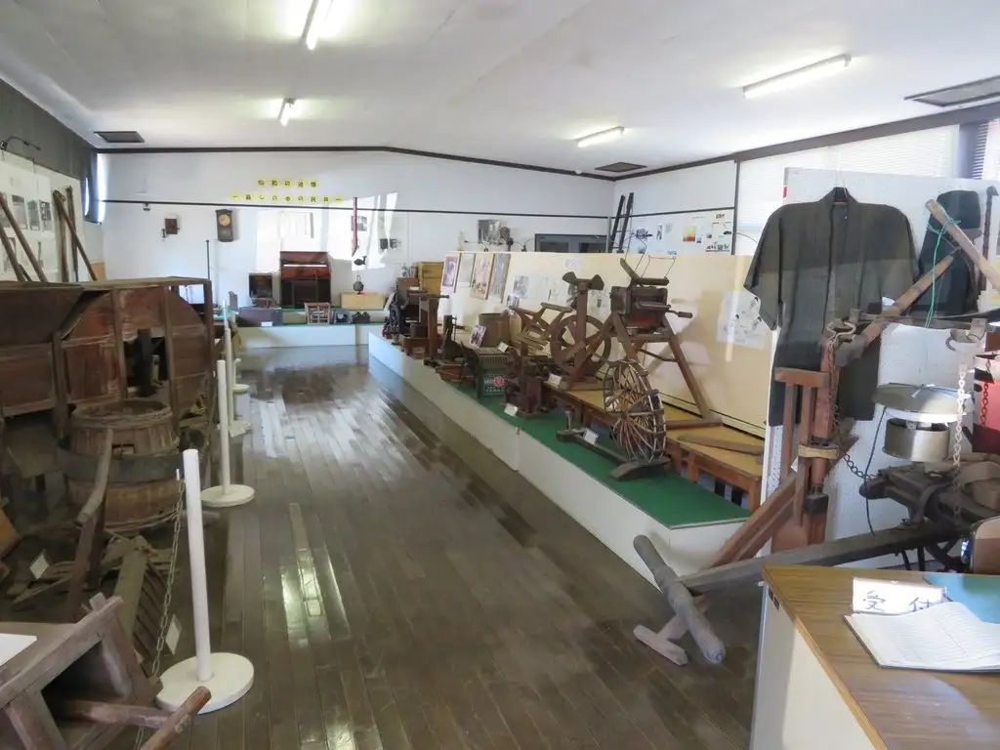
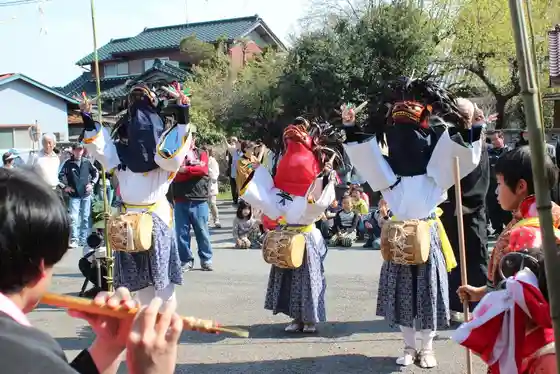
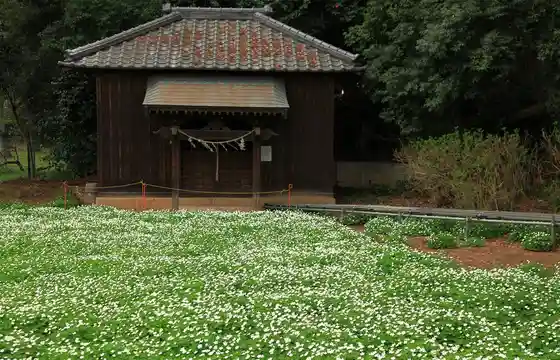
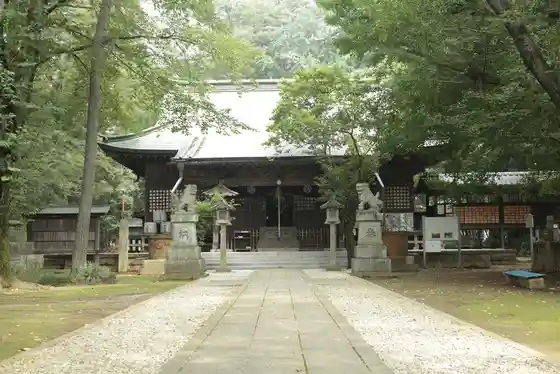

Nogi
Nogi · Tochigi
Nogi
Highlighted on the Tochigi map.

Sights
Nogi Kyodo Kan
Kumano Shrine

Nirinso (Nogi Shrine)

Nogi Shrine

Nogi Renga Kama Nogi Hofuman Kan
no Gi Suihen no Raku Ko
Matsubara Bridge
Nogi Nai no Himawari